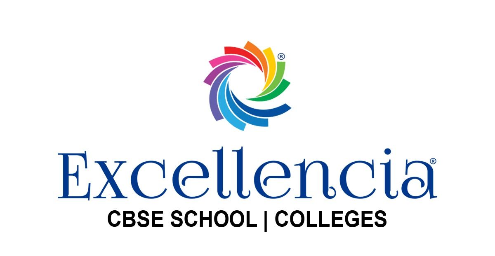

I completed my 10th grade at Sri Chaitanya School, achieving a perfect score of 10 grade points out of 10, which reflects my dedication and academic excellence. Following this, I pursued my 12th grade at Excellencia Junior College, where I scored 94% in my intermediate state board exams, demonstrating my consistent performance and commitment to my studies.
My passion for coding and technology guided me to choose Computer Science Engineering as my major. I decided to join GITAM College for my BTech, influenced by the offer of a 25% scholarship, which recognized my academic achievements and provided an excellent opportunity to further my education in a reputable institution.
In my first year at GITAM, I maintained a strong academic record, scoring a 9.16 SGPA in my first semester and a 9.26 SGPA in my second semester. This sums up to an overall CGPA of 9.17 for my first year, highlighting my consistent performance and dedication to my studies.